We are dealing with usual cherry picking, some early statements from 1964 are taken out of context, while NASA's strategic choices are disregarded. All missions landed on the moon piloting the LEM with the Sun behind them, and this was for safety reasons as a very low Sun on the horizon could have interfered in the pilot's choice of the best spot to land. This meant that the ladder for the exit from the LEM was always be backlit. Here we see all six LEMs with the backlit descent ladder.
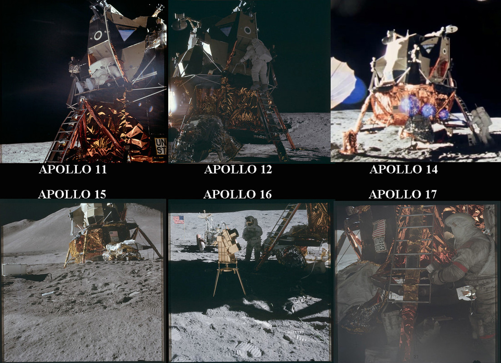
If NASA had thought it was impossible to take decent photos in the shade, it would have illuminated the shadowed area with a spotlight, after all, the LEM was not lacking in batteries with which to power a possible spotlight. Instead, for all missions we have filmed footage without spotlights, as well as photos taken against light without flash and perfectly visible. In fact, the document reported by American Moon does not say that backlit photos or shots were impossible, it only says that due to the strong lunar contrast, lights and shadows could not have been seen correctly in the same photo.
Photos/videos set for the parts in light would have made the parts in shadow very dark, such as photo AS11-40-5950 shown here with the shadowed side of the LEM very dark.
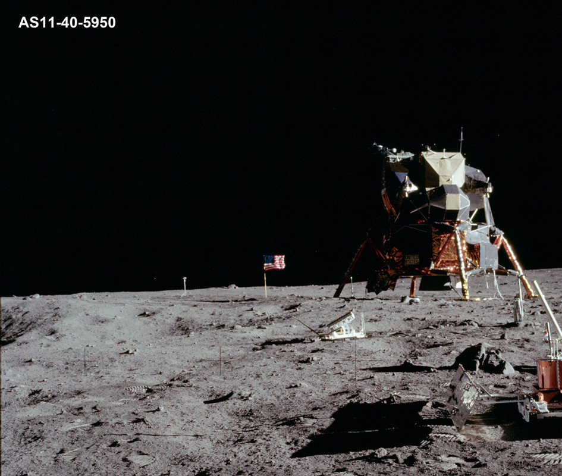
On the contrary, photos/videos set for the shadowed parts could have burned the parts in the sun, such as the television footage of Aldrin's descent with Armstrong's suit heavily overexposed.
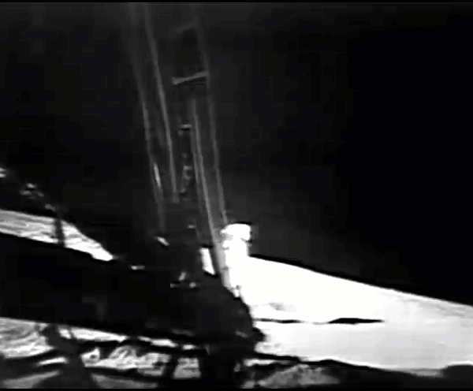
However, to take photos in the shadows it would have been enough to open the aperture and increase the exposure, then choosing a favorable phase angle, with the sun not in opposition, even the ground in the sun would not have been overexposed.
We have already exposed the question of the phase angle in other answers, but we explain it again with this gif image taken from a video of Apollo 14.
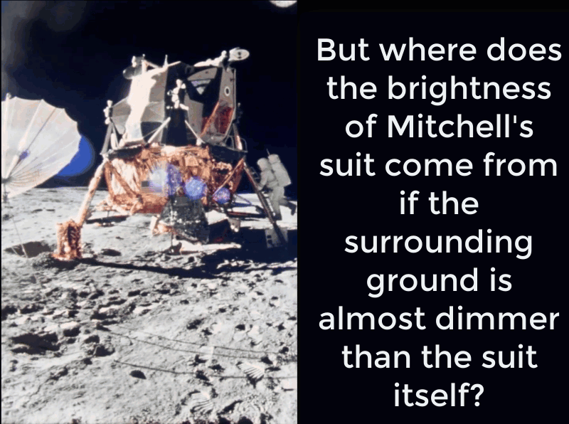
If we look at the photos that framed the LEM against the light and at the same time the ground lateral to the LEM, thanks to the effect of the phase angle not in opposition, these photos kept the astronaut bright without overexposing the ground. On the contrary, photos or videos taken with the phase angle in opposition to keep the astronaut in the shadow bright enough would inevitably have overexposed the ground, as we see in this gif taken from Armstrong's descent taken from inside the LEM by Aldrin, and this in accordance with NASA's recommendations.

If the documentary American Moon had done a real in-depth study on the backlight issue, without stopping to look at 4 photos, but had analyzed many other photos and especially the film footage of the Maurer camera, the question reported by the NASA document would have been much more understandable, as it would have been clear what kind of contrast is present on the Moon and how this could be managed in the photos.
The documentary does not correctly consider the contextual conditions of the lunar environment, a context unknown even to its photographic consultants who we know have never practiced astrophotography. To determine from a glimpse of the ground that the light coming from this ground is insufficient to illuminate the backlights (as we see from this image on the left from the documentary) is a profoundly wrong conclusion.
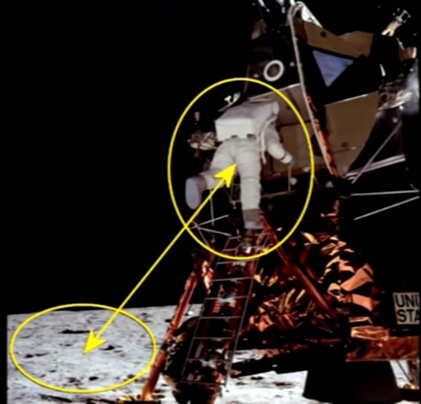
Yet it was enough to look a little beyond one's nose and take this shot of Apollo 11 taken from the LEM window to understand how much the brightness varied as a function of the phase angle and how the ground next to the LEM, the one taken in the photos at Aldrin, was much darker than the ground behind the LEM, the one on which the brightness of the photo depended.
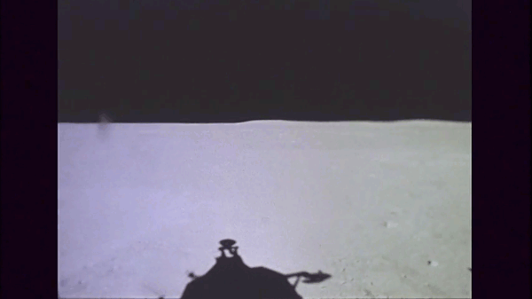
Be careful, the darkest part of the ground on the side of the LEM is not due to a fall of light caused by a spotlight placed behind the LEM, because if we look at the shadows made by the stones, the light does not come from behind the LEM at all as you can see perfectly from this image.
Those light falls depend on the backscatter and phase angle between the sun, ground and lens.

However, to eliminate the chatter it would have been enough to observe the descent from the LEM of Mitchell, astronaut of Apollo 14, a mission that has landed with the sun one degree lower than Apollo 11 and as you can see, his suit is illuminated exclusively by the light coming from the rear regolith, and where the presence of reflective panels is absolutely not noticeable.
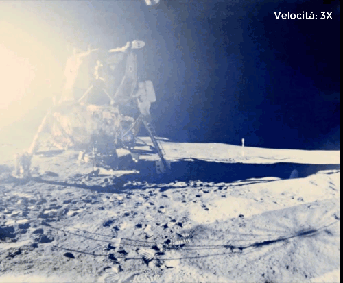
Why were these examples not shown either to the viewers of the documentary or even to the photographic consultants?
For this reason, the answer to the question is inherent in the images we proposed: the light that so effectively illuminated the back of the LEM and Aldrin's suit was the light coming from the regolith posterior to the LEM, which thanks to the lunar backscatter sends more light back in the same direction from which it receives it. compared to the other directions. This phenomenon, well known by astrophotographers, is called phase-angle variable backscatter and, as can be seen in the link below, it is being studied by probes sent to the Moon to study it in depth, such as the Clementine probe.
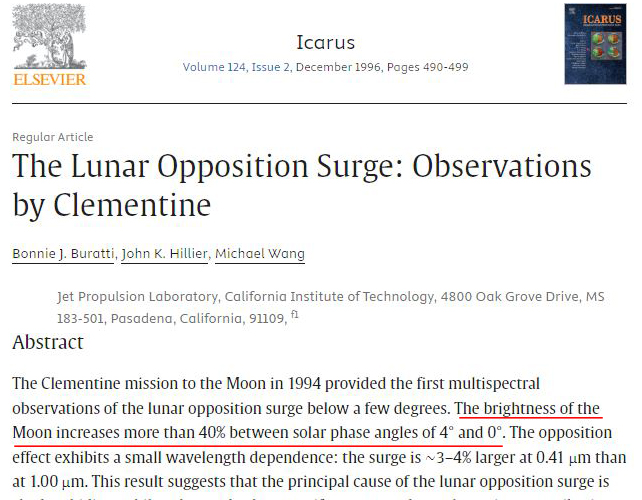
"The Lunar Opposition Surge: Observations by Clementine" - Science Direct
Unfortunately, the mistaken belief that the lunar terrain should always return the same brightness from wherever you looked at it, is THE ORIGINAL SIN, or if you want the unknown and even misunderstood phenomenon from which all the other erroneous evaluations then arose, from hot spots to backlighting.
Let's repeat the concept: this assumption of luminous homogeneity applies only when the sun is high on the horizon, a situation that only the last three missions during the third EVA have verified. Here we put a panoramic image of Apollo 16, with the sun high (about 48°) and with the ground that returns an intense and homogeneous illumination. There are seven photos: AS16-116-18574 /81

On the contrary, the first three missions, and all the other six missions limited to the first EVA, having the sun low on the horizon, have reported in their photos strong backscatter oscillations as a function of the phase angle such as this panorama of Apollo 12 which is composed of images AS12-46-6836 at 6844 and taken with the sun at only 8° above the horizon, the lowest of all six missions, and as you can see here the variation in backscatter is really striking.

Here we see an interesting comparison between two panoramas of the Apollo 17 LEM. One taken during the first EVA with low sun and strong backscatter on the ground, and the second during the second EVA and with a much more homogeneous terrain.
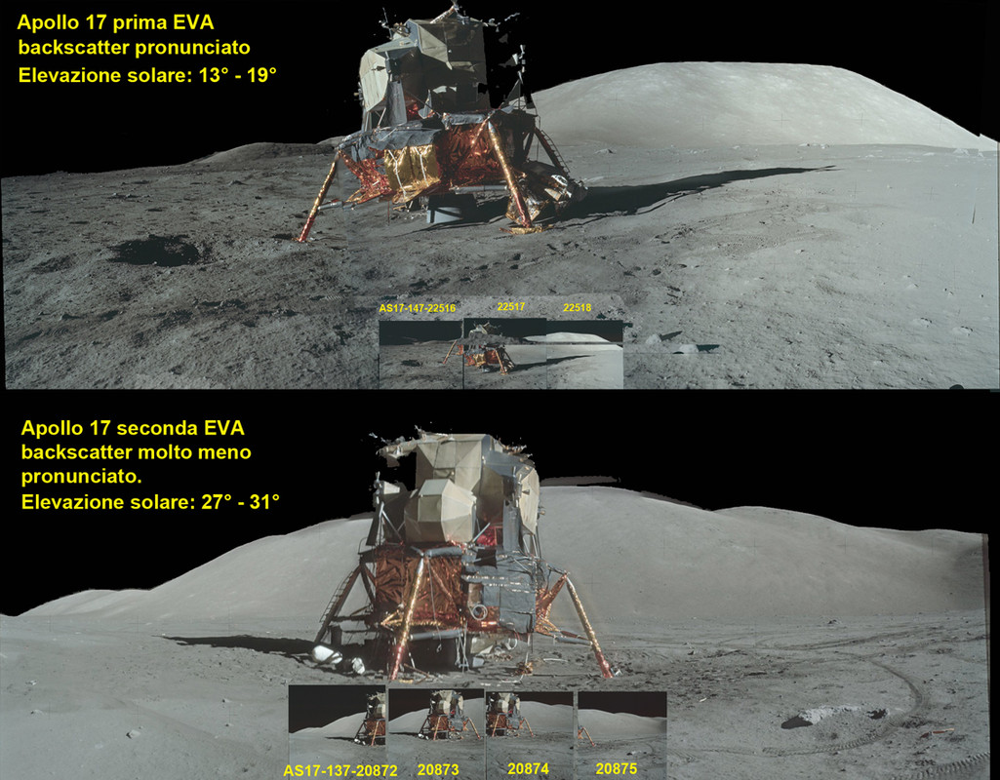
Here we are faced with the usual error where it is assumed that the lunar terrain illuminated by the sun returns its brightness in a homogeneous way, regardless of the position of the sun, which can happen exclusively when the sun is high on the horizon, while as we have abundantly demonstrated, when the sun is low, the terrain will reflect a brightness strongly dependent on the phase angle, and this not only on the Moon, but also on Earth, albeit to a lesser extent, given that from the sky even at sunset there is always a certain brightness that softens the contrasts, a softening effect that is completely missing on the Moon and where, on the contrary, the contrasts are particularly accentuated.
Below is a composition of terrestrial photos at sunset over deserts, to remind those who have forgotten what phenomenon we are talking about, a phenomenon that an expert landscape photographer would be able to recognize perfectly.
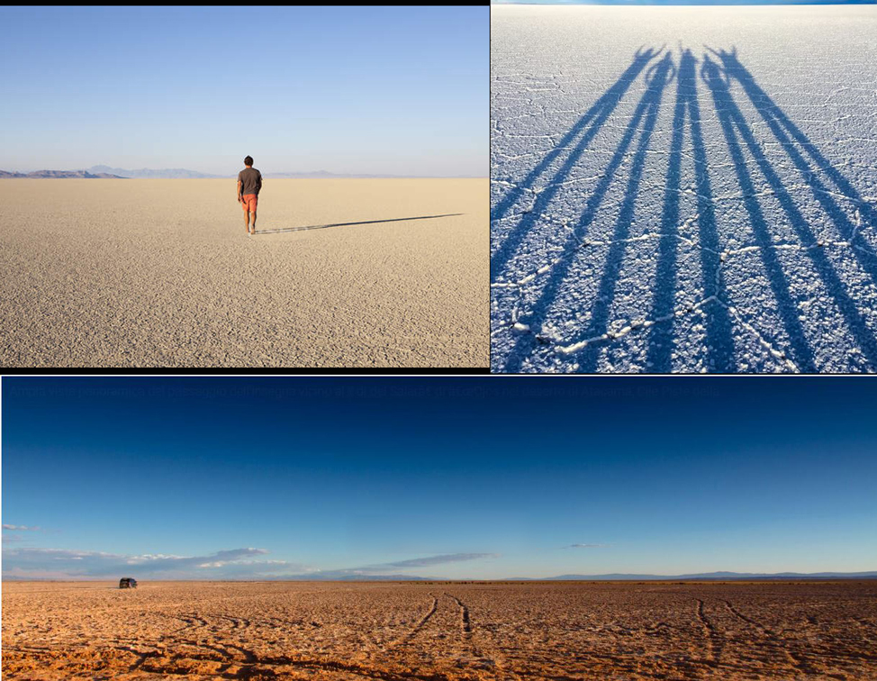
To highlight the error inherent in question 40, we show the image attached to the question itself, (AS14-66-9306), taken during the first extravehicular activity, with the sun very low, i.e. just over 14° above the horizon.
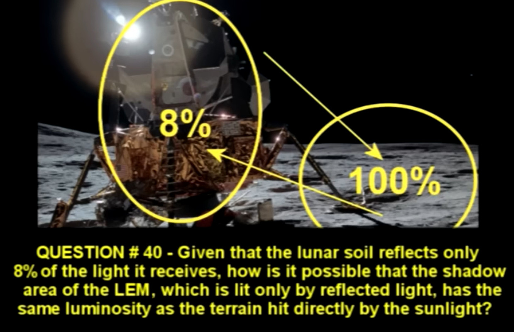
We have already seen in the previous answers with the examples of Apollo 11, that taking the brightness of the ground next to the LEM and considering that brightness as generalized to all the surrounding terrain, was a serious mistake, in fact the only EVA of Apollo 11 was made with the sun between 15 and 17 degrees above the horizon and this low incidence of solar rays made the brightness of the terrain strongly influenced by the phase angle between the ground, photographer and sun.
We now demonstrate, with this gif combined with the following panoramic photo, that the same mistake was made for the backlit image of Apollo 14 where, with the sun even lower on the horizon, the ground also showed, a very strong backscatter effect as a function of the phase angle.
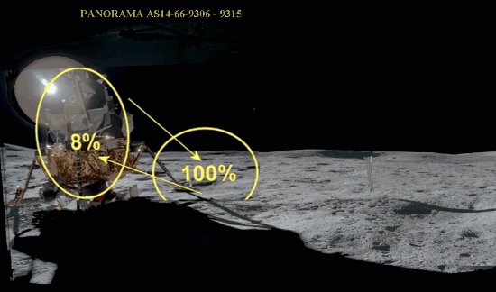
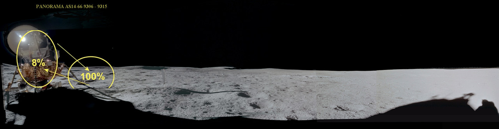
This further image illustrates what would have been the true relationship between incident light of the ground in front of the LEM and the light that is reflected by the Kapton with which the LEM was covered, which we know is a technical component with extensive reflective properties of both light and heat.
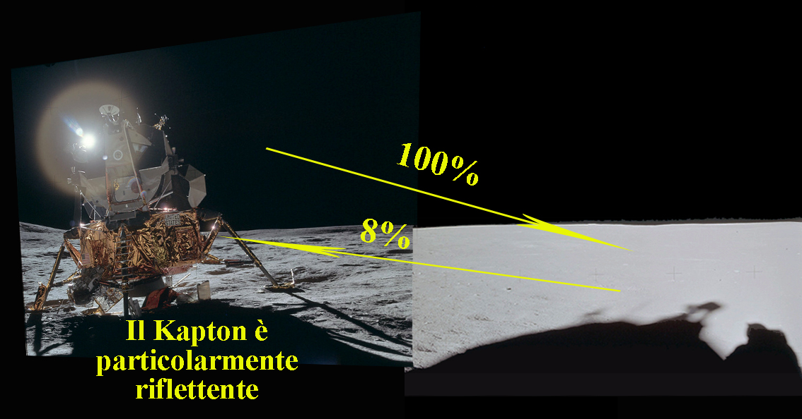
For those who are still not convinced, we show this second glimpse of the Apollo 14 LEM with a "composite" of three photos and as we see there is a perfect balance between incident light and reflected light. We remind you that the roll of these three "composite" photos is the same roll (66) as the sample photo of question 40, so the three photos were taken just before the sample photo, i.e. AS14-66-9306 and are, as indicated in the photo itself, AS14-66-9275; 9276; 9277
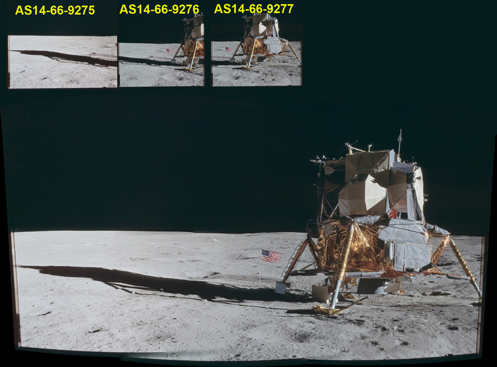
However, stating that the lunar albedo returns 8% of sunlight is a correct figure, but it must refer to the albedo of the Sea of Tranquility, while the lunar average is 12%.
The Clementine mission to the Moon in 1994 provided the first multispectral observations of the lunar opposition surge below a few degrees. The brightness of the Moon increases more than 40% between solar phase angles of 4° and 0° Science direct
thus confirming that the albedo of the lunar terrain is strongly influenced by the phase angle with which it is observed, so that 8% is an average datum, of the albedo defined geometric.
In conclusion, we can say that in the lunar photos analyzed so far there is no anomaly between direct light and reflected light.
The Mytbusters are a very nice group of people who do debunking-show aimed at the so-called "general public", but usually do not enter into lunar topics in depth with technical analysis, which astronomers and scientists do. Let's not confuse the roles.
In this case the Mytbusters did not take much account of the lunar backscatter, in fact from this image we see below,
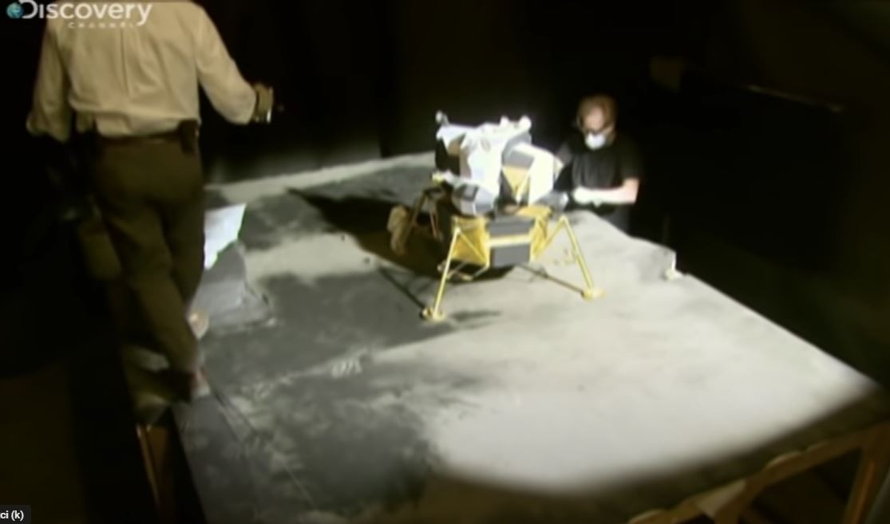
it is more than evident that in their attempt they put a lot of well-lit sand in front of the LEM model and almost nothing behind, that is, right from the point from which the light should have arrived towards the astronaut model, as we have abundantly explained in the previous answers.
In fact, just look at this photo of roll 40 of the Apollo 11 mission, taken with the sun in opposition, so with the maximum brightness that the lunar soil could return, how the amount of light that hit the back of the LEM, was decidedly higher than that prepared in the MythBusters test and already to the eye that light would justify the brightness in the shadow of the Lem.

It is very right that the MythBusters' attempt gave a result that is not despicable, but not comparable with the lunar one. In addition, the sand used, despite having an albedo of 8% and could not reproduce in any way the albedo that varied as a function of the phase angle, since it always remained the same brightness regardless of how it was framed. I hope this concept is clear. On the contrary, in this panoramic image, which combines 4 images starting from AS11-40-5855, the different brightness is well highlighted with the phase angle indicated by the yellow arrow and how the first image on the left, the one that portrays the regolith behind the astronaut, is the brightest, thus being able to illuminate the suit and the back of the Lem.
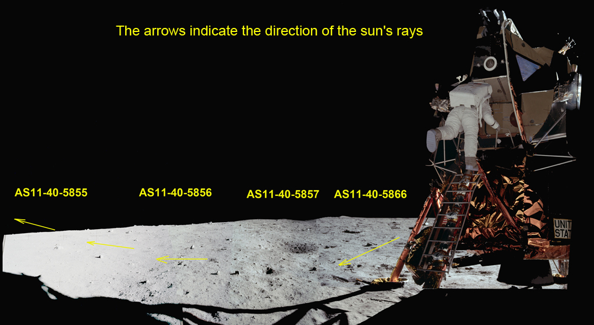
Lacking this effect related to the variation of brightness with the phase angle, the brightness of the sand placed on the side of the astronaut model in the example of the MythBusters, and which is the one seen in the background of their image, was too bright, not being weakened by the phenomenon of backscatter.
If we then add the lack of sand illuminated by the headlight behind the model, the photo could only be different from the lunar one.
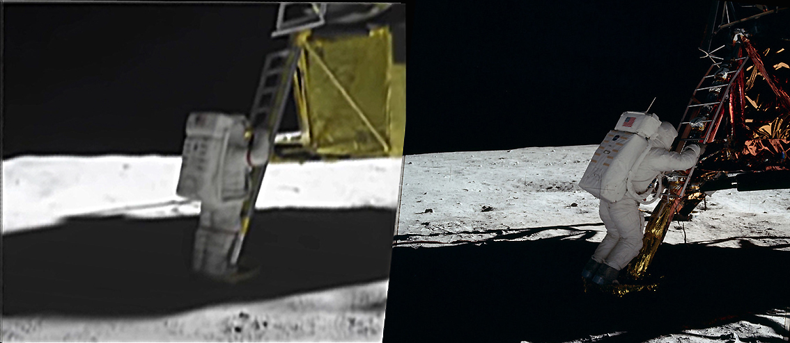
In fact, in comparison with lunar photos, between the suit and the ground the difference in brightness varies greatly as a function of the phase angle and if on the Moon there had not been the backscatter effect to lower the brightness of the ground and this had maintained the brightness that we see on the left of this "composite" photo compared with the brightness of the suit

then the two photos, the one of the Mytbusters and the photo of Aldrin, would have been much more similar.
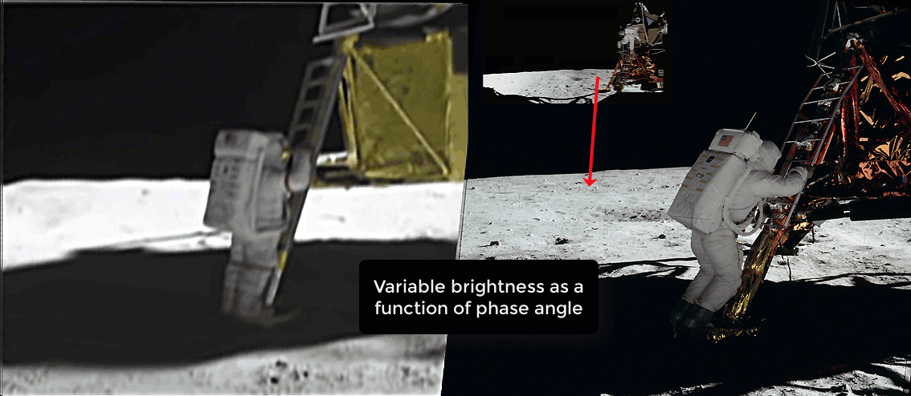
At this point someone might object that backscatter is just a game of images placed side by side with Photoshop and do not correspond to a real variation of the albedo of the regolith as a function of the phase angle. To disprove this supposition and confirm that the "composite" of the photos behind the LEM reproduces the true difference in brightness that the terrain returned by rotating the camera by about 90°, we add this gif where the variation in brightness of the terrain is compared in a movie, the famous "rover grand prix", which has a camera rotation of about 90°, compared to the change in brightness of the terrain behind the LEM with the same camera rotation.
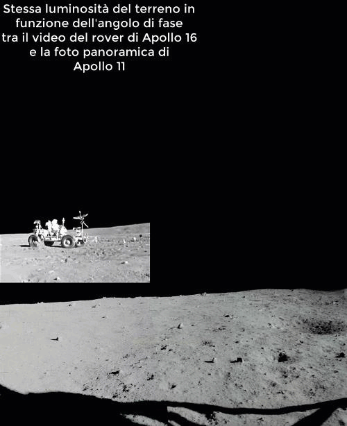
As we can see, the variation in the albedo of the terrain is practically the same and this comforts us in having shown that all the errors of evaluation made by the documentary depend exclusively on the lack of understanding of the phenomenon of lunar backscatter.
We put here three images that leave no doubt and that the photographers should have seen, before giving a competent judgment.

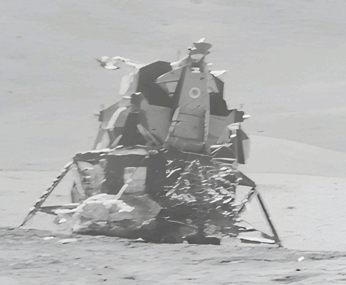

Now we will demonstrate with three examples that the supposed reflective panels were not necessary even to illuminate the photos of Apollo 11, in particular those shown to the photographers, and we will start from the photo below, where you can see the LEM from the side, in a position similar to the one Armstrong framed during the descent of Aldrin.
The photo is AS11-40-5950 and as you can see to the left of the LEM there is no panel

Now from this photo we will extract the same glimpse of LEM taken by Armstrong during Aldrin's descent and compare it with the photo where the photographers had assumed the presence of panels, namely the one with Aldrin arriving at the bottom of the ladder, AS11-40-5869.
Combining the two photos we will get this comparison:
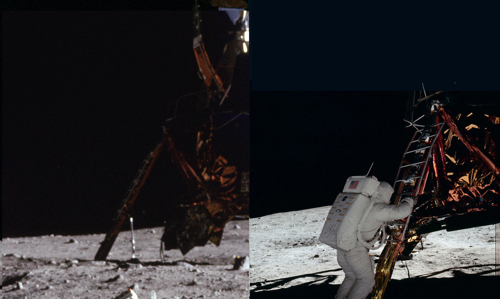
As we can see, the part on the left of the photo is much darker than the one on the right, but be careful, this depends exclusively on the closure of the diaphragm which allowed much less light to pass through in the shot on the left, in fact although the ground framed is the same in the two photos, the one on the left is much darker.
Now we will bring the two photos to the same brightness so that the ground has the same brightness on the left as on the right.
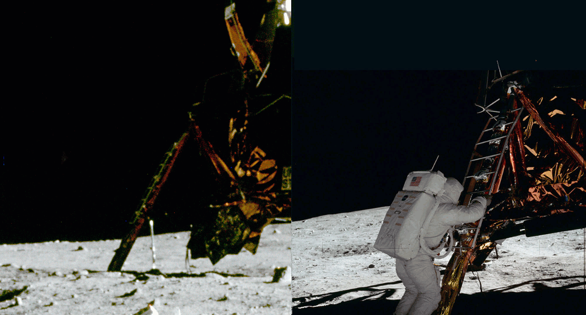
as we can see, after restoring the ground to the same brightness between the two images, the visible parts of the LEM and the ladder have the same brightness in the two photos, and this demonstrates several things that we list:
-The first is that to illuminate the back of the LEM you didn't need any reflective panels at all.
-The second is that the brightest parts in Kapton reflect only the brightness of the ground.
-The third is that Armstrong's suit created some additional reflections only on Aldrin's heels and especially on the ladder upperright, which being the object covered by Kapton closest to the astronaut, reflected his brightness, while the brightness of his suit in the sun did not affect the overall brightness that much, which depended almost exclusively on the ground behind Aldrin.

Now let's take this second example which is even more illuminating.
Let's start with this photo, the only one that frames Armstrong, from behind and against the light: the AS11-40-5886
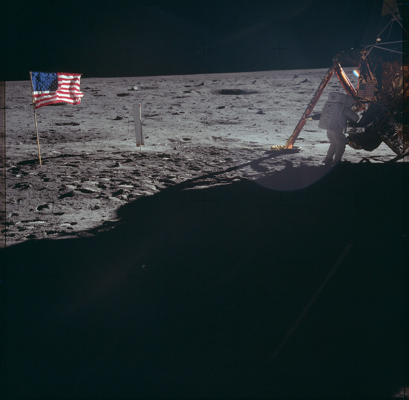
Reflective panels here too obviously could not have been any. We juxtapose the detail of Armstrong with the suit in the shade and backlit with the image of Aldrin also in the shade and backlit and where the photographers had assumed the presence of reflective panels.
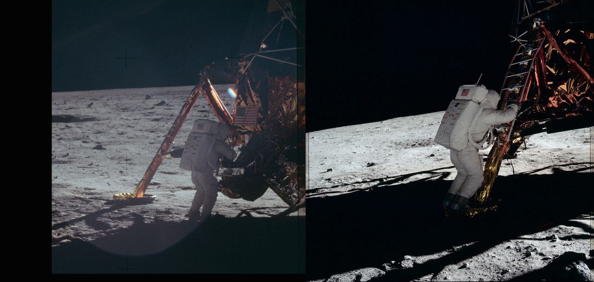
Also in this example, the image on the left with Armstrong's suit is less bright than Aldrin's, but be careful, the ground around the LEM, which is the same, does not have the same brightness. If we make the brightness of the ground similar, we have this second image.
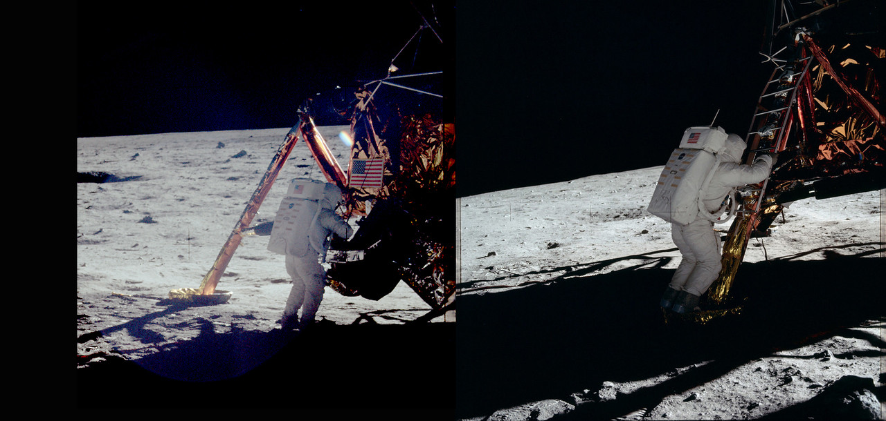
As we can see now the back of the LEM and the suits have comparable luminosities but there is a difference that proves even more that the light came from the ground: in fact in the photo on the left the back of Armstrong's backpack is particularly bright, precisely because behind the backpack there was illuminated ground, while in the photo on the right with Aldrin his right side is brighter, because the light came from his right and above all the lower part of the arm and the armpit are brighter and this is the unequivocal demonstration that the light came from below, that is, from the ground.
With these examples we have shown that reflective panels were not absolutely necessary to illuminate the back of the lem, because, thanks to the characteristic of the lunar soil, all the brightness of the backlight could come from the ground, which not surprisingly behaves like a diffused light panel that illuminates higher and less close to the ground so that it can keep the shadows on the ground absolutely black, since the light coming from the ground cannot curve 180 ° to illuminate other terrain and in addition it does not cast shadows on the illuminated subjects. On the contrary, the climbs on the mirrors of the documentary to demonstrate that it was possible to illuminate the astronauts without illuminating the ground, break on the fact that the type of lighting produced by a panel with reflected and non-diffused light, inevitably makes very visible shadows on the subjects as we see in the image below, shadows totally absent in the lunar photos of the subjects photographed against the light.

-
The third example is the litmus test of everything that has been shown so far, in fact we will show a series of images taken from a camera movie made by Aldrin on the LEM, during Armstrong's descent from the ladder and where you can see a perfectly lit suit, and a very bright ground behind it and that due to the phase angle in opposition is overexposed unlike the lateral one taken from the previous shots where the more favorable phase angle kept it less bright, and where for a moment in the frame you can see the background where you can see no reflective panels at all.
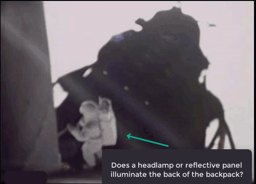
It is clear, at this point, that the opinion of photographers has been strongly conditioned by an insufficient investigation of lunar photos, combined with a very limited time dedicated to the evaluation of the already few images. Add to this the fact that having never done astrophotography, the consultants were not able to independently hypothesize phenomena well known and studied by astrophotographers, such as lunar backscatter and albedo dependent on the phase angle. Obviously, put in those limiting conditions, the photographers assumed the presence of reflective panels, but without indicating their type, size and above all their arrangement and without this important and verifiable information on the panels, to say generically that these could be there is to say everything and say nothing, as the ground itself acts as a reflective panel, and consequently would fully fall within the possibility of a "generic panel" contemplated by photographers.
The answer to the question is therefore now obvious: the astronauts did not need any panel to take their photos of backlit subjects, it was enough that they opened the diaphragm sufficiently and framed only the ground next to the LEM, and not the much brighter one in front, and this would have allowed them to take perfect backlit photos, without the ground framed behind it being particularly bright or even overexposed.
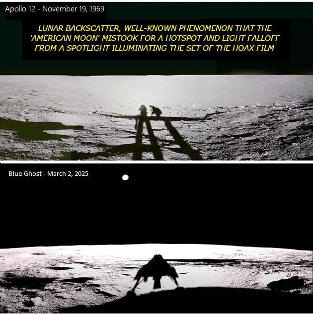
CONCLUSION
As we have seen, none of the 42 anomalies indicated by the film American Moon and transformed into as many questions, were able to cast the slightest doubt on the veracity of the landings, given that all the objections arose either from observation flaws, or from a lack of knowledge of the contextual conditions of the lunar environment and unfortunately also from ignorance of physical laws and laws of perspective.
This perfectly explains why no credible scientist, astronomer, aerospace engineer or astrophotographer has ever doubted, not only the evidence of the landings, but not even the material that meticulously documented their development.
For this reason we feel we can state with conviction that it will not be ignorance, incompetence or superficiality that will deprive humanity of one of its most ambitious and hard-fought achievements and of which all of us, as human beings should, on the contrary, feel convinced and perpetually proud.
Chapters: